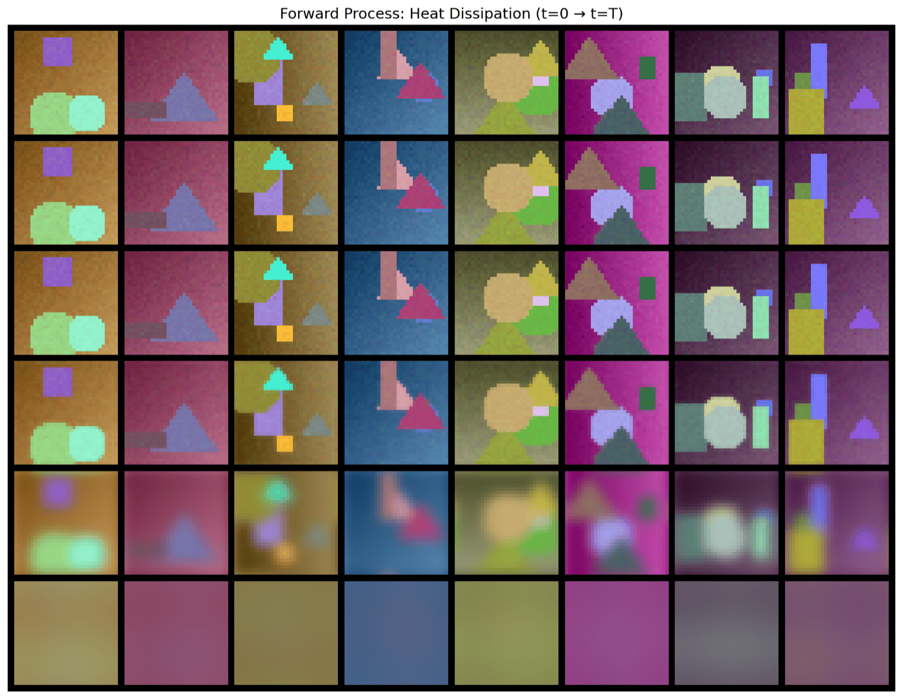
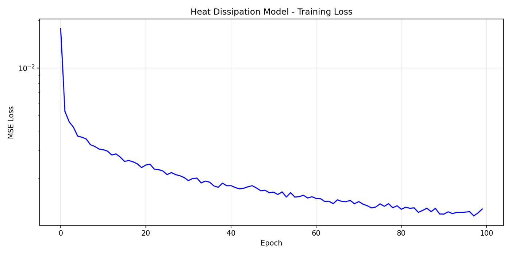
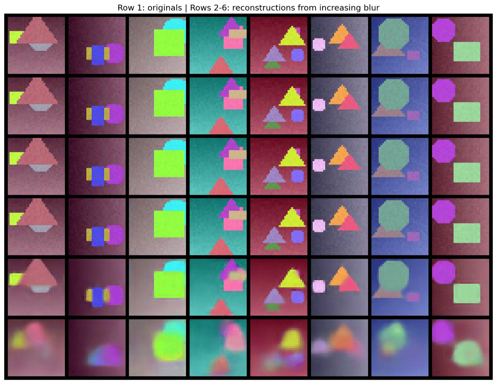
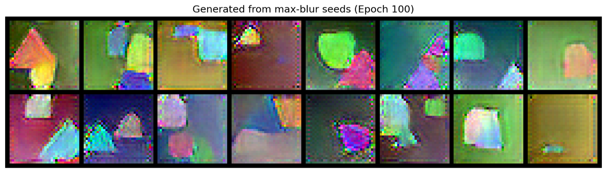
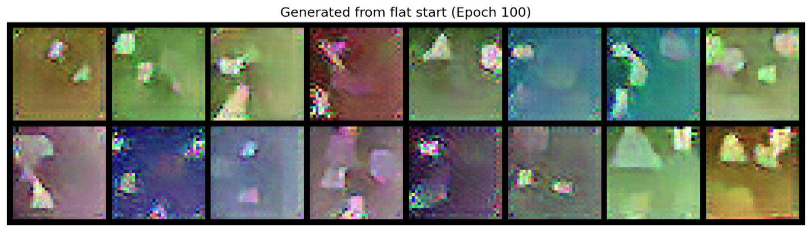
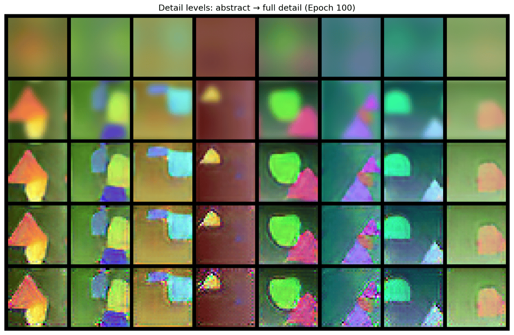

Standard diffusion corrupts an image with i.i.d. Gaussian noise. This model corrupts it with the heat equation instead — a deterministic, physically grounded blur that dissolves fine detail first and coarse structure last — then trains a U-Net to reverse that blur and recover the original image.
Standard diffusion models corrupt an image with independent Gaussian noise at every pixel, destroying every spatial frequency at the same rate. The heat equation corrupts an image differently: it is equivalent to convolving with a Gaussian kernel whose width grows with time, which in frequency space is a low-pass filter that gets progressively narrower. High-frequency detail (edges, texture) is attenuated fastest; low-frequency structure (overall color, rough shape) survives the longest. Run forward far enough, and any image converges to a single flat field — not to random noise.

| Aspect | Standard diffusion | Heat dissipation (this work) |
|---|---|---|
| Forward corruption | add i.i.d. Gaussian noise | blur with the heat kernel (FFT multiply) |
| Frequency treatment | every frequency corrupted equally | high frequencies die first, low frequencies survive longest |
| Network predicts | noise ε, then u0 = ut − ε | clean image u0 directly |
| Mass conservation | not applicable | exact — the zero-frequency (mean color) term is untouched by construction |
| Endpoint at t=T | pure random noise | a deterministic flat field (the image's own average color) |
A time-conditioned U-Net fθ(ut, t) takes the blurred image and a sinusoidal embedding of the blur level t, and predicts the original clean image u0 directly — unlike standard diffusion policies, which predict the noise that was added and subtract it out. The network uses residual blocks with GroupNorm and time-conditioning at every stage, encoder/decoder skip connections, and is trained with a single MSE loss between the prediction and the ground-truth image at a randomly sampled blur level per batch.
| Setting | Value |
|---|---|
| Dataset | 5,000 synthetic 32×32 images — geometric shapes with gradient backgrounds |
| Model size | 6,231,363 parameters |
| Blur schedule | 30 timesteps, log-spaced σ from 0.01 to 10 |
| Optimizer | AdamW, lr 2e-4, cosine annealed, gradient-clipped at 1.0 |
| Training | 100 epochs, batch size 64 |
| Loss | MSE between predicted and ground-truth clean image |

The most direct test of fθ is reconstruction: take a real image, blur it to a given timestep, and check whether the network can recover the original in a single forward pass.

Reconstruction predicts u0 in one shot; generation instead walks backward through the schedule — predict u0, re-blur that prediction to t−1, feed it back in, and repeat down to t=0. Two starting points were tested: a real image blurred all the way to the maximum timestep, and a synthetic near-flat field with no information about any specific image at all.


Because the forward process is deterministic, there is no built-in source of randomness to seed sample diversity the way Gaussian noise does in standard diffusion. Starting from a flat field with only a tiny random perturbation gives the reverse process very little to work with, and the result is visibly noisier and lower-fidelity than reconstruction from a real (if heavily blurred) image. This is a structural property of "cold" deterministic corruption processes, not a bug in this particular network — and it's the reason later work in this space (e.g. Cold Diffusion, Bansal et al. 2022) pairs a deterministic forward process with an explicit source of seed diversity.
Stopping the reverse process early, at different timesteps, exposes the same coarse-to-fine hierarchy the forward process created — early stops give abstract color blobs, later stops progressively add shape and edge detail.

Two numerical checks confirm the forward process behaves exactly as the heat-equation math predicts.
Total pixel intensity summed over the whole image, before and after blurring:
| Blur level (t) | Original mass | Blurred mass | Ratio |
|---|---|---|---|
| 0 | 1448.71 | 1448.71 | 1.0000 |
| 10 | 1448.71 | 1448.71 | 1.0000 |
| 15 | 1448.71 | 1448.71 | 1.0000 |
| 29 (max) | 1448.71 | 1448.71 | 1.0000 |
Average FFT magnitude in five concentric frequency bands (band 1 = lowest frequencies, band 5 = highest), at increasing blur levels:
| t | Band 1 | Band 2 | Band 3 | Band 4 | Band 5 |
|---|---|---|---|---|---|
| 0 | 19.66 | 3.03 | 1.63 | 1.17 | 0.99 |
| 5 | 19.66 | 3.03 | 1.63 | 1.17 | 0.99 |
| 10 | 19.64 | 3.00 | 1.59 | 1.11 | 0.91 |
| 15 | 19.44 | 2.70 | 1.20 | 0.65 | 0.39 |
| 29 (max) | 7.40 | 0.00 | 0.00 | 0.00 | 0.00 |
Everything above trains on a small synthetic shapes dataset chosen for fast iteration and clean, interpretable structure. The repository also includes a more general, CLI-configurable version of the same method — a deeper U-Net with optional self-attention at low resolution, an optional stochastic perturbation during sampling, and out-of-the-box support for CIFAR-10, CIFAR-100, and CelebA. That script is provided as a documented starting point for scaling the method up; it has not yet been run to completion on a real photographic dataset, so no results are claimed for it here.